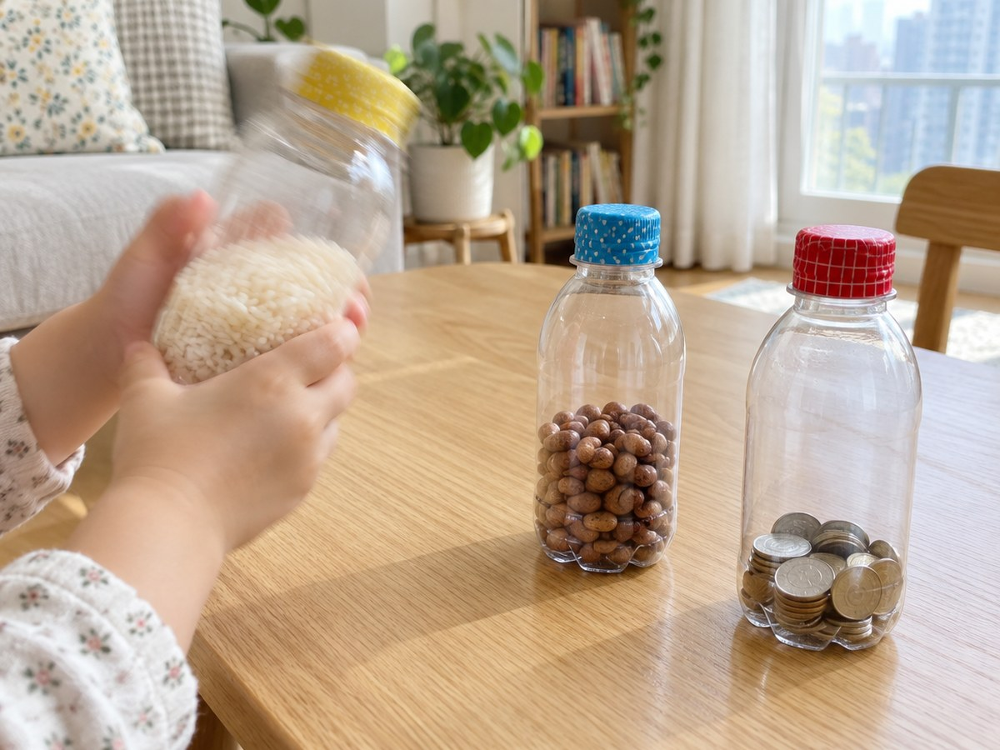

전체 단원 › 실험·활동 › 1학년 2학기 과학
페트병 마라카스 소리 비교

작은 페트병에 쌀, 콩, 동전을 넣어 마라카스를 만들어요. 흔들어 보며 큰 소리와 작은 소리, 높은 소리와 낮은 소리를 귀로 비교해요.
30분 · 난이도 ★☆☆ 쉬움
준비물
- 작은 페트병 3개 — 300~500mL 음료병. 라벨을 떼고 씻어 말려요.
- 쌀, 콩, 동전 — 병마다 한 가지씩. 병의 3분의 1쯤만 넣어요.
- 종이 깔때기 — 이면지를 고깔 모양으로 말아 만들어요
- 색 테이프 — 뚜껑을 감아 단단히 막아요. 병마다 색을 다르게 하면 구별하기 쉬워요.
- 가림판 — 상자를 펼친 판이나 큰 그림책
만드는 방법
- 재료 준비하기
라벨을 뗀 작은 페트병 3개와 쌀, 콩, 동전을 준비해요. 이면지를 고깔 모양으로 말아 깔때기를 만들어요. - 병에 넣기
깔때기를 병 입구에 꽂고 숟가락으로 쌀을 넣어요. 병의 3분의 1쯤 차면 멈춰요. 다른 병에는 콩, 또 다른 병에는 동전을 넣어요. - 뚜껑 막기
뚜껑을 꼭 닫고 색 테이프로 뚜껑과 병목을 빙 둘러 감아요. 흔들다가 열리지 않게 단단히 막아요. - 흔들어 비교하기
마라카스를 하나씩 흔들어요. 살살 흔들 때와 세게 흔들 때 소리 크기가 어떻게 다른가요? 쌀은 가늘고 높은 '사사삭', 콩은 굵고 낮은 '달그락', 동전은 '짤랑짤랑' 쇠 소리가 나요. - 소리 맞히기 놀이
가림판 뒤에서 부모님이 마라카스 하나를 흔들면, 아이는 눈앞의 마라카스를 보며 어떤 병인지 맞혀요. 역할을 바꿔서도 해 봐요.
관찰해 봐요
- 쌀을 조금 넣은 병과 많이 넣은 병은 소리가 어떻게 다를까요?
- 가장 높은 소리가 나는 마라카스는 무엇인가요? 가장 낮은 소리는요?
- 마라카스를 흔들 때 손에 무엇이 느껴지나요?
왜 그럴까?
마라카스를 흔들면 안에 든 쌀알과 콩알이 병에 부딪히며 부르르 떨려요. 이 떨림이 공기를 타고 귀까지 와서 소리로 들려요. 세게 흔들면 더 세게 부딪혀서 큰 소리가 나요. 작고 가벼운 쌀알은 가늘고 높은 소리를, 크고 무거운 콩은 굵고 낮은 소리를 내요.